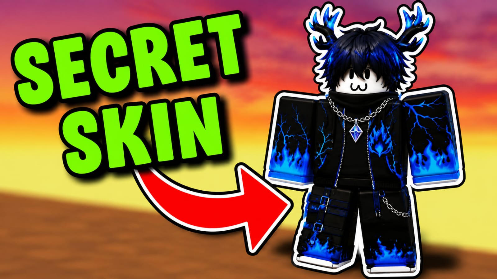

Cada mes aparecen nuevas tendencias dentro de Roblox y muchos jugadores buscan accesorios, skins y estilos originales para personalizar sus avatares. Algunos conjuntos se vuelven populares rápidamente gracias a TikTok, YouTube y diferentes experiencias populares dentro del juego.
Actualmente, muchos usuarios están utilizando estilos oscuros, accesorios con efectos azules, alas, cuernos, ropa llamativa y combinaciones inspiradas en personajes competitivos o estéticos.
Entre los accesorios más buscados suelen estar sombreros, máscaras, alas, cadenas, cabellos llamativos, gafas y objetos con efectos visuales. Estos elementos ayudan a que cada avatar tenga una apariencia diferente dentro de Roblox.
Muchos jugadores también buscan accesorios gratuitos o recompensas especiales disponibles durante eventos temporales. Algunas experiencias dentro de Roblox permiten desbloquear objetos exclusivos completando misiones o participando en actividades especiales.
Antes de comprar o usar cualquier accesorio, es recomendable revisar si el objeto pertenece a una fuente confiable, si otros jugadores lo recomiendan y si realmente combina con el estilo que quieres crear.
También es importante tener cuidado con páginas externas que prometen skins exclusivas, Robux gratis o accesorios secretos. La forma más segura siempre es revisar la información desde Roblox o desde fuentes confiables.
Dentro de la comunidad se están viendo muchos estilos futuristas, avatares oscuros, personajes estilo anime, combinaciones retro y accesorios inspirados en videojuegos populares. Estas tendencias cambian constantemente.
Personalizar tu avatar puede hacer que tu experiencia dentro de Roblox sea más divertida, especialmente si juegas con amigos, participas en eventos o quieres destacar dentro de tus juegos favoritos.
← Volver